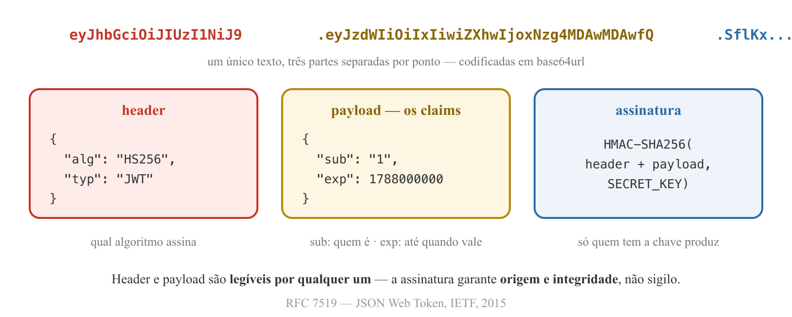
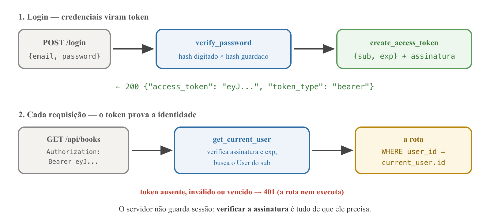

Users e autenticação
com JWT
Programação Avançada — Aula 05
Universidade Unirios
Qualquer um apaga qualquer livro
O CRUD de Books persiste no MySQL — restart não apaga nada, o banco gera os ids. Abra uma janela anônima e chame a API: listar, criar, alterar e apagar funcionam para qualquer um.
- Livro não tem dono — a tabela
booksnão sabe de quem é cada linha (posse); - A API não sabe quem chama — não existe sequer o conceito de usuário (identidade).
Posse se resolve no banco, com uma relação. Identidade se resolve na API, com autenticação. A aula constrói os dois, nessa ordem.
Objetivos da aula
- T-7 Declarar a relação 1:N com chave estrangeira obrigatória de
booksparausers; - Implementar
POST /signupguardando apenas o hash da senha (bcrypt); - T-8 Comparar cookies e sessions com tokens — e justificar o JWT nesta aplicação;
- T-8 Descrever a anatomia de um JWT e os claims que ele carrega;
- Implementar
POST /logine proteger o CRUD: cada usuário só enxerga e altera os próprios livros; - Organizar o backend:
schemas.py,routers/por recurso e omain.pycomo ponto de entrada.
Entidades e relacionamentos
O modelo entidade-relacionamento descreve os dados como entidades ligadas por relacionamentos com cardinalidade: 1:1, 1:N, N:M.
- Origem: formalizado por Peter Chen em The Entity-Relationship Model — Toward a Unified View of Data (ACM TODS, 1976);
- Nosso caso é 1:N: um User possui vários Books; cada Book pertence a exatamente um User — a regra do domínio do projeto.
CHEN, P. — The Entity-Relationship Model, ACM TODS, 1976
A relação é uma coluna

CHEN, P. — 1976 · DATE, C. J. — An Introduction to Database Systems, 2003
Chave estrangeira: constraint, não convenção
- A foreign key mora no lado N:
books.user_idguarda a chave primária do lado 1 (users.id) — cada livro tem um dono, a resposta cabe numa coluna; - Integridade referencial: o MySQL recusa um
user_idque não exista emusers.id— livro órfão não entra; - NOT NULL por decisão de domínio: não existe livro sem dono neste sistema;
- Constraint é regra de negócio que o banco defende sozinho — como o
UNIQUEe oNOT NULLjá vistos.
DATE, C. J. — An Introduction to Database Systems, 8ª ed., 2003
Recapitulando — relação 1:N
- Entidades se ligam por relacionamentos com cardinalidade (Chen, 1976);
- 1:N no relacional = chave estrangeira no lado N apontando para o lado 1;
- O banco defende a relação: integridade referencial;
NOT NULLna FK: todo livro tem dono, por regra de domínio.
Senha não se armazena — armazena-se o hash
pip install bcrypt "pydantic[email]"
pip freeze > requirements.txt
- bcrypt (Provos & Mazières, USENIX 1999): função de mão única — do hash não se recupera a senha;
- Salt embutido: duas senhas iguais geram hashes diferentes — tabelas pré-computadas não funcionam;
- Custo ajustável: lento de propósito, para inviabilizar força bruta;
- No login, calcula-se o hash do que foi digitado e comparam-se os hashes;
pydantic[email]— extra do pip: o Pydantic com o validador de e-mail, para o schema do cadastro.
PROVOS, N.; MAZIÈRES, D. — A Future-Adaptable Password Scheme, USENIX, 1999
models.py — o User e a chave estrangeira
class User(Base):
__tablename__ = "users"
id: Mapped[int] = mapped_column(primary_key=True)
name: Mapped[str] = mapped_column(String(100))
email: Mapped[str] = mapped_column(String(255), unique=True)
password: Mapped[str] = mapped_column(String(255))
created_at: Mapped[datetime] = mapped_column(server_default=func.now())
class Book(Base):
__tablename__ = "books"
id: Mapped[int] = mapped_column(primary_key=True)
name: Mapped[str] = mapped_column(String(255))
user_id: Mapped[int] = mapped_column(ForeignKey("users.id"))
created_at: Mapped[datetime] = mapped_column(server_default=func.now())
emailcomunique=True— o banco recusa dois cadastros com o mesmo e-mail;passwordguarda o hash, nunca a senha;ForeignKey("users.id")— tabela.coluna, os nomes do banco; sem| None, a coluna éNOT NULL: não existe livro sem dono.
Recriar as tabelas
DROP TABLE books;
-- suba o uvicorn e leia o echo: CREATE TABLE users, depois books
SHOW CREATE TABLE books;
- O model mudou e o
create_allnão altera tabela existente — dado de aula é descartável; - Os dois
CREATE TABLEsaem na ordem certa:usersprimeiro, porquebookso referencia; - Na saída do
SHOW CREATE TABLE:FOREIGN KEY (user_id) REFERENCES users (id)— o ORM declarou a constraint da teoria — e oname varchar(255) NOT NULLde sempre.
Os schemas do Book acompanham
class BookCreate(BaseModel):
name: str = Field(min_length=1, max_length=255)
class BookRead(BaseModel):
model_config = ConfigDict(from_attributes=True)
id: int
name: str
user_id: int
- Validação na criação:
Fielddeclara as regras —min_length=1recusa nome vazio,max_length=255espelha oString(255)da coluna. Quem erra recebe 422, não um erro cru do banco. O PUT usa o mesmo schema: mesma regra, de graça; - O contrato de saída ganha o dono:
user_identra noBookRead— a relação do banco aparece na resposta; - Um POST válido agora quebra:
user_idéNOT NULLe a rota não tem dono para dar ao livro — o banco acabou de exigir a autenticação.
A senha entra, mas nunca sai
class UserCreate(BaseModel):
name: str = Field(min_length=1, max_length=100)
email: EmailStr = Field(max_length=255)
password: str = Field(min_length=8, max_length=72)
class UserRead(BaseModel):
model_config = ConfigDict(from_attributes=True)
id: int
name: str
email: str
- Entrada validada como a do Book:
nameespelha oString(100);EmailStrrecusa e-mail malformado com 422 (o formato é do schema; a unicidade é do banco); passwordentre 8 e 72: mínimo por política; máximo é o limite real do bcrypt — o schema barra com 422 antes do erro da biblioteca;- A senha existe no
UserCreatee não existe noUserRead— nem o hash: o contrato de saída é o filtro.
security.py — o hash na frente do banco
import bcrypt
def hash_password(password: str) -> str:
return bcrypt.hashpw(password.encode(), bcrypt.gensalt()).decode()
def verify_password(password: str, hashed: str) -> bool:
return bcrypt.checkpw(password.encode(), hashed.encode())
gensalt()gera o salt;hashpwdevolve o hash com o salt embutido — não há coluna de salt;checkpwrefaz o hash da senha digitada e compara — a verificação de mão única;- Segurança ganha arquivo próprio, como a conexão ganhou o
database.py(ADR-0002).
POST /signup
@app.post("/signup", response_model=UserRead, status_code=201)
def signup(user: UserCreate, session: Session = Depends(get_session)):
statement = select(models.User).where(models.User.email == user.email)
existing_user = session.scalars(statement).first()
if existing_user is not None:
raise HTTPException(status_code=409, detail="Email already registered")
new_user = models.User(name=user.name, email=user.email,
password=hash_password(user.password))
session.add(new_user)
session.commit()
session.refresh(new_user)
return new_user
- E-mail repetido → 409 Conflict: o pedido é válido, mas conflita com o estado do recurso;
- Duas requisições simultâneas com o mesmo e-mail? Ambas passam pelo
if— a última defesa é oUNIQUEno banco; - No
SELECTdo mysql:$2b$12$...— e senhas iguais com hashes diferentes (o salt trabalhando).
O HTTP tem amnésia
- O HTTP é stateless: cada requisição chega sozinha, sem memória da anterior;
- O usuário fez login às 10h; às 10h01, o servidor já não sabe quem ele é;
- Toda autenticação web é uma resposta a essa amnésia — a diferença entre as soluções é onde mora o estado.
Cookies + sessions — o estado no servidor
- Origem: o cookie foi criado por Lou Montulli (Netscape, 1994) e padronizado na RFC 6265 (2011);
- No login, o servidor cria um registro de sessão e devolve um cookie com o id dessa sessão;
- O navegador reenvia o cookie sozinho a cada requisição;
- O estado mora no servidor: o cookie é só a chave do armário.
RFC 6265 — HTTP State Management Mechanism, IETF, 2011
Tokens — o estado viaja com o cliente
- No login, o servidor emite um token autocontido — e não guarda nada;
- O cliente o guarda e o envia explicitamente no header
Authorization: Bearer <token>; - A cada requisição, o servidor verifica o token — em vez de consultar um armário de sessões;
- Bearer: token "ao portador" — quem o carrega, é. Por isso não se compartilha.
Cookie + session × token
| Cookie + session | Token (JWT) | |
|---|---|---|
| Onde mora o estado | no servidor (armário de sessões) | no próprio token |
| O que o cliente guarda | id de sessão (cookie) | o token inteiro |
| Como viaja | cookie, automático pelo navegador | header Authorization, explícito |
| Revogação | imediata (apaga a sessão) | difícil — vale até expirar |
| Vocação | aplicações renderizadas no servidor | APIs consumidas por SPAs e apps |
JWT — JSON Web Token
"Um meio compacto e seguro para URLs de representar claims a serem transferidos entre duas partes."
- Origem: padronizado pela IETF na RFC 7519 (2015);
- Claim: uma afirmação sobre o portador —
sub(quem é),exp(até quando vale),iat(quando foi emitido); - Três partes separadas por ponto:
header.payload.signature.
RFC 7519 — JSON Web Token (JWT), IETF, 2015
A anatomia de um JWT

Assinado, não cifrado
- Base64url é codificação, não criptografia: qualquer um decodifica e lê header e payload (demonstração em jwt.io);
- A assinatura garante integridade e origem: alterou um caractere, o HMAC não bate e o token é recusado;
- Só quem tem a
SECRET_KEYproduz uma assinatura válida — ler é permitido, forjar não; - Consequência: nunca colocar senha ou dado sensível no payload.
RFC 7519 — JSON Web Token (JWT), IETF, 2015
Por que JWT nesta aplicação
- O backend é uma API que servirá um frontend React: cliente e servidor conversam por requisições explícitas, e o token viaja no header
Authorization; - Sem sessão no servidor: qualquer instância da API valida o token só com a chave secreta — não há armário de sessões para consultar nem sincronizar;
- O custo do stateless: um JWT emitido não pode ser "apagado" — vale até o
exp. Por isso tokens têm vida curta; - Cookies+sessions seguem excelentes para aplicações renderizadas no servidor — a escolha aqui é pela arquitetura do projeto, não por moda.
Recapitulando — autenticação
- HTTP é stateless; autenticar é responder à amnésia;
- Cookies+sessions: estado no servidor. Tokens: estado no próprio token;
- JWT (RFC 7519):
header.payload.signature— legível, mas infalsificável sem a chave; - Claims
subeexp: quem é, até quando; - API + SPA → token no header
Authorization: Bearer.
Emitir tokens — PyJWT
pip install pyjwt
pip freeze > requirements.txt
SECRET_KEY = "change-me-in-production-32-bytes-min!"
ALGORITHM = "HS256"
TOKEN_LIFETIME = timedelta(hours=2)
def create_access_token(user_id: int) -> str:
payload = {
"sub": str(user_id),
"exp": datetime.now(timezone.utc) + TOKEN_LIFETIME,
}
return jwt.encode(payload, SECRET_KEY, algorithm=ALGORITHM)
SECRET_KEY— quem a tem, emite tokens válidos. Em produção: variável de ambiente, nunca o código. Mínimo de 32 bytes para o HMAC-SHA256 (RFC 7518);TOKEN_LIFETIME— oexp: a resposta ao problema da revogação;subvai como texto, por exigência da RFC.
get_current_user — a dependency de identidade
bearer_scheme = HTTPBearer(auto_error=False)
def get_current_user(
credentials: HTTPAuthorizationCredentials | None = Depends(bearer_scheme),
session: Session = Depends(get_session),
) -> models.User:
if credentials is None:
raise HTTPException(status_code=401, detail="Not authenticated")
try:
payload = jwt.decode(credentials.credentials, SECRET_KEY,
algorithms=[ALGORITHM])
except jwt.InvalidTokenError:
raise HTTPException(status_code=401, detail="Invalid or expired token")
user = session.get(models.User, int(payload["sub"]))
if user is None:
raise HTTPException(status_code=401, detail="Invalid or expired token")
return user
- Uma dependency como
get_session— a rota declara e recebe o usuário logado, pronto; jwt.decodevalida assinatura e expiração numa chamada;- 401 é "quem é você?" — 403 ("sei quem é, não pode") é assunto de autorização, adiante no curso.
POST /login — credenciais viram token
class LoginRequest(BaseModel):
email: EmailStr
password: str
class TokenResponse(BaseModel):
access_token: str
token_type: str = "bearer"
@app.post("/login", response_model=TokenResponse)
def login(credentials: LoginRequest, session: Session = Depends(get_session)):
statement = select(models.User).where(models.User.email == credentials.email)
user = session.scalars(statement).first()
if user is None or not verify_password(credentials.password, user.password):
raise HTTPException(status_code=401, detail="Invalid email or password")
return TokenResponse(access_token=create_access_token(user.id))
verify_passwordfecha o ciclo do bcrypt: hash digitado × hash guardado;- Uma única mensagem para e-mail inexistente e senha errada — não entregar a lista de quem tem conta;
- Cole o token em jwt.io: payload legível, assinatura só com a chave.
O ciclo completo

O CRUD ganha dono — listar e criar
@app.get("/api/books", response_model=list[BookRead])
def list_books(name: str = "", session: Session = Depends(get_session),
current_user: models.User = Depends(get_current_user)):
statement = select(models.Book).where(models.Book.user_id == current_user.id)
if name != "":
statement = statement.where(models.Book.name.contains(name))
return session.scalars(statement).all()
@app.post("/api/books", response_model=BookRead, status_code=201)
def create_book(book: BookCreate, session: Session = Depends(get_session),
current_user: models.User = Depends(get_current_user)):
new_book = models.Book(name=book.name, user_id=current_user.id)
session.add(new_book)
session.commit()
session.refresh(new_book)
return new_book
- No
where(user_id == current_user.id), a FK e o token se encontram; - No POST, o dono vem do token, nunca do corpo — se viesse do corpo, qualquer um cadastraria em nome de qualquer um.
Livro alheio não existe: 404
@app.get("/api/books/{book_id}", response_model=BookRead)
def read_book(book_id: int, session: Session = Depends(get_session),
current_user: models.User = Depends(get_current_user)):
book = session.get(models.Book, book_id)
if book is None or book.user_id != current_user.id:
raise HTTPException(status_code=404, detail="Book not found")
return book
- PUT e DELETE seguem o mesmo desenho: buscar pela chave, conferir o dono, agir;
- 404, não 403: a API não confirma a existência de um recurso que não é seu — livro alheio e livro inexistente são indistinguíveis para quem pede;
/healthcontinua público: rota de infraestrutura, não de dados.
A prova com dois usuários
- Sem token:
GET /api/books→ 401; - Login com o primeiro usuário, token no Authorize do Swagger, dois livros criados;
- Login com a segunda usuária, troque o token:
GET /api/books→ lista vazia; - Com o token dela,
GET /api/books/1(livro do outro) → 404 — idem PUT e DELETE; - No mysql,
SELECT id, name, user_id FROM books;: as linhas de cada dono lado a lado — e o Swagger mostrando só as do token ativo.
main.py virou o arquivo onde tudo mora
backend/
├── main.py ← ponto de entrada: app, create_all, include_router
├── database.py ← conexão, Base e sessão do ORM
├── models.py ← as tabelas (User, Book)
├── schemas.py ← todas as classes Pydantic
├── security.py ← hash, token e get_current_user
└── routers/
├── __init__.py
└── users.py / books.py ← as rotas de cada recurso
- Seis schemas e oito rotas de dois recursos num arquivo só — hora de separar;
- Estrutura por tipo de arquivo (ADR-0002): cada responsabilidade num módulo;
- Os schemas se movem para
schemas.pysem mudar uma linha.
APIRouter — o recurso com nome próprio
# routers/books.py
router = APIRouter(prefix="/api/books", tags=["books"])
@router.get("", response_model=list[BookRead]) # era /api/books
@router.get("/{book_id}", response_model=BookRead)
# main.py — só o ponto de entrada
app = FastAPI()
app.include_router(users.router)
app.include_router(books.router)
prefix— o nome padrão do recurso, declarado uma vez: toda rota do arquivo nasce sob/api/books;tags— o Swagger se reorganiza em seções por recurso: users e books;include_router— omain.pynão conhece rota nenhuma;/healthfica nele por ser infraestrutura;- Nenhuma URL mudou: refatorar é mover sem mudar comportamento.
Exercício em sala
- Crie
GET /api/users/me, que devolve o usuário logado no formatoUserRead; - Teste com o token de cada usuário — a resposta muda com o token, sem parâmetro na URL;
- Teste sem token → 401.
routers/users.py e o corpo tem uma linha: a dependency já fez todo o trabalho — identidade virou infraestrutura. Atenção ao response_model: é ele que impede o hash da senha de sair na resposta.Síntese da aula
- A relação 1:N (Chen, 1976) vira uma coluna com chave estrangeira —
books.user_id— defendida pelo banco: não existe livro sem dono; - Os schemas do Book espelham as regras da coluna:
Field(min_length, max_length)valida a entrada com 422, e oBookReadpublica o dono (user_id); - Senha não se armazena: armazena-se o hash (bcrypt — mão única, salt, custo);
- HTTP é stateless: cookies+sessions guardam o estado no servidor; tokens o carregam consigo;
- JWT (RFC 7519) é assinado, não cifrado:
header.payload.signature, claimssubeexp— a assinatura impede a falsificação; - O login emite; a dependency
get_current_userverifica; o CRUD opera sobre os livros do usuário logado — dono vem do token, nunca do corpo; - O backend se organizou por tipo de arquivo: schemas num módulo, cada recurso com seu router (
prefixetags) e omain.pycomo ponto de entrada.
Referências
- CHEN, P. The Entity-Relationship Model — Toward a Unified View of Data. ACM TODS, 1976. (entidades, relacionamentos e cardinalidades)
- DATE, C. J. An Introduction to Database Systems. 8ª ed., Addison-Wesley, 2003. (chave estrangeira e integridade referencial)
- PROVOS, N.; MAZIÈRES, D. A Future-Adaptable Password Scheme. USENIX, 1999. (o bcrypt)
- RFC 6265 — HTTP State Management Mechanism. IETF, 2011. (cookies)
- RFC 7519 — JSON Web Token (JWT). IETF, 2015.
- OWASP. JSON Web Token Cheat Sheet e Authentication Cheat Sheet — cheatsheetseries.owasp.org.
- Documentação oficial do PyJWT — pyjwt.readthedocs.io.
- Documentação oficial do SQLAlchemy — docs.sqlalchemy.org (ForeignKey).